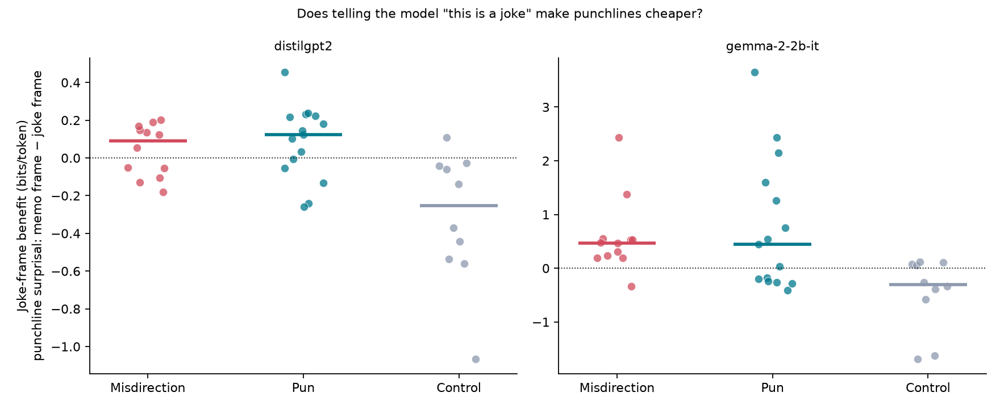
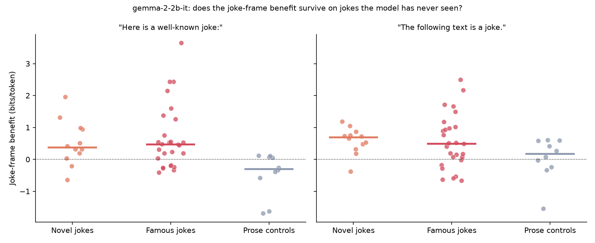
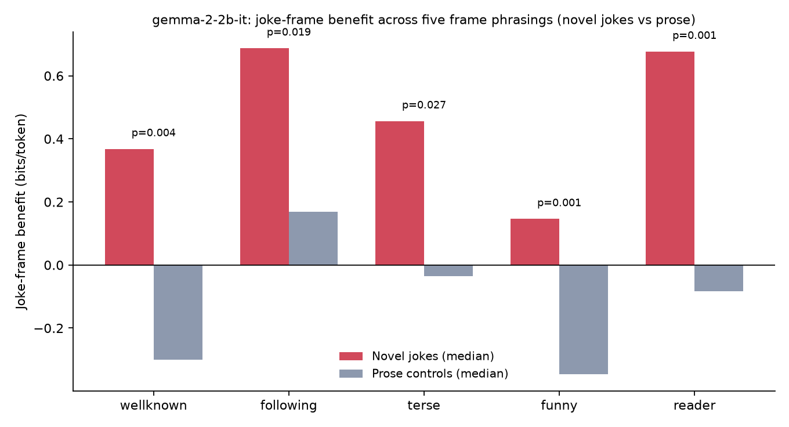
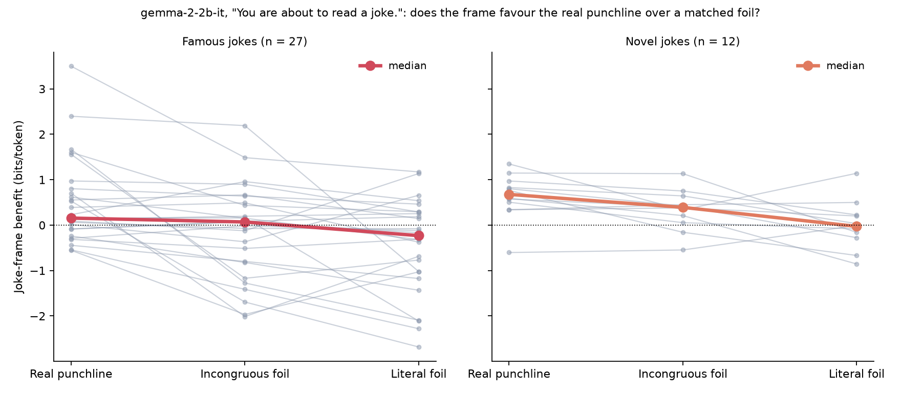
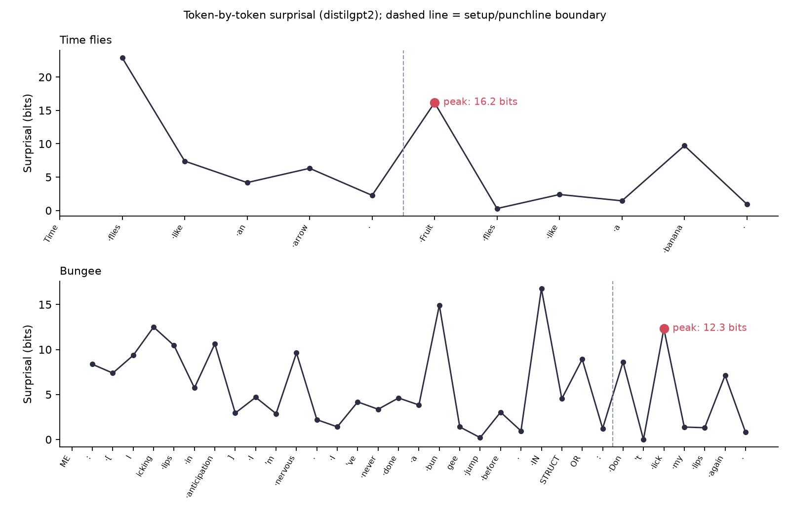

Laughter as a Compression Dividend
Do Language Models Get the Joke? Measuring Humour in Bits.
Funny right? Why aren't you laughing? Let me explain the joke. Don't worry about the symbols. These three lines are a joke, in a sense this post will try to unpack. Roughly: a punchline lands impossibly far from the surface of things you expected, and impossibly close to the surface of things you should have expected, a surface the setup was sitting on all along. Hold onto that; we come back to exactly these equations near the end, and by then you'll be equipped to get it and laugh at my hilarious joke.
Humour is one of those things that feels sacrilegious to formalise. At the risk of desecration, let us anyway dive into how we can understand humour through mathematics, and how it reliably plays with the same cognitive machinery we use for understanding anything at all.
If "understanding" is building a compact model of the world (extracting low-dimensional structure from messy, high-dimensional experience), then jokes look less mysterious. (The book Principles and Practices of Deep Representation Learning develops this view of understanding beautifully.) A joke is a tiny controlled experiment: it makes you adopt one model, violates it, then (if it's good) hands you a better model that suddenly makes the whole thing fit.
The framing below is stitched together from humour research and information theory that was developed decades ago (sources are in Where these ideas come from). This post does two things: it restates those existing ideas in the language of compression, and then uses small language models as a measuring instrument to see whether their predictions show up in text.
Here's the idea, and the short version of what I found when I measured it:
The idea: A punchline is expensive under the interpretation the setup suggests and cheap under a second one you didn't see coming. The click is switching to that second interpretation, after which the whole text, setup included, compresses better. I'm calling the saving the compression dividend for convenience, but the substance belongs to incongruity-resolution theory and to Schmidhuber's compression-progress account of fun. In description-length terms, what makes a joke hard is the cost of choosing the right interpretation, not the cost of the words once you've chosen it.
What I found: If that's right, making the second interpretation easier to reach should make a punchline cheaper. Using language models as the measuring instrument, in a small-scale pilot (about 50 short texts, models up to 2.6B parameters), it does. Tell a model "this is a joke" and joke punchlines get measurably cheaper to encode while ordinary prose doesn't. In the larger model the saving goes specifically to punchlines that resolve the joke, more than to equally surprising ones that don't.
Compression, in bits
Understanding something means having a compact model of it: a small amount of structure that predicts what comes next. Information theory makes that literal. An ideal code matched to a model \(M\) spends about
bits on data \(D\): an event at probability \(1/2\) costs one bit, one at \(1/1024\) costs ten. In language modelling the same quantity is surprisal, the number of bits a model needs for the next token given everything before it.
Minimum Description Length (MDL) adds one more charge, for the model itself, and picks the \(M\) that minimises the two-part total
first describe the interpretation you're using, then the data under it. The experiments later manipulate the first part (which interpretation is favoured) and watch what happens to the total.
A joke as model selection
Let the setup be \(s\) and the punchline be \(p\), so the "data" of the joke is \(D=(s,p)\).
As a listener, you implicitly entertain interpretations: scripts, word senses, pragmatic intents, narrative frames. Call one such interpretation \(M\). (Throughout, \(M_1\) and \(M_2\) are interpretations held by the listener, latent hypotheses about what's going on.)
This is the classic incongruity-resolution account (more on its origins at the end), translated into code lengths. "The joke lands" becomes:
- The setup makes some initial interpretation \(M_1\) salient.
- The punchline is costly under \(M_1\).
- There exists an alternative \(M_2\) that makes the whole thing cheap.
Formally, define the MDL score
Then the click is the moment you realise
The joke isn't just "high surprise." It's high surprise followed by a big compression gain.
In surprisal terms, the quantities worth naming are the punchline's cost under each interpretation:
A good joke has \(S_1\) high and \(S_2 \ll S_1\), and ideally the setup is also cheap under \(M_2\), under a different assignment of its latent variables. A convenient "resolvable incongruity" signal is the surprisal drop:
Big \(\Delta S\) is the "it was wrong, now it's obvious" sensation.
Where does the cost of a joke sit, then? Under \(M_2\) the punchline is cheap: \(S_2\) is small. What stops you seeing the joke straight away is that \(M_2\) looked unlikely after the setup; its model cost \(L(M_2)\), given the setup, is high. The click is paying that model cost and finding that the total falls. So on this account, a joke's difficulty lives mostly in the model term (the price of choosing the interpretation) rather than in the data term. That's the half of the story the experiments below go after.
A worked example
Let's run an actual joke through this lens before adding any more machinery.
ME: [licking lips in anticipation] I'm nervous. I've never done a bungee jump before. INSTRUCTOR: don't lick my lips again.
@FrenulumBreve
The setup loads \(M_1\) cheaply. The bracket notation [licking lips in anticipation] paired with "I'm nervous, I've never done a bungee jump before," sets up a coherent, unsurprising picture: anxious first-timer, nervous body-habit, confessing vulnerability to their instructor. \(-\log p(s \mid M_1)\) is low. The setup is cheap to encode, certainly relative to what's coming.
The punchline is highly expensive under \(M_1\). "Don't lick my lips again" has very low probability as a response to someone nervous about bungee jumping. \(S_1\) spikes hard, because the instructor's reply is poorly compressed under the model the setup built.
\(M_2\) collapses everything. It turns out the speaker has been literally licking the instructor's lips. Under \(M_2\) the punchline isn't just cheap, it's the obvious thing to say, so \(S_2 \ll S_1\).
Measuring the ideas
A language model assigns a probability to each token given everything before it. (It is not the same thing as a listener holding \(M_1\), and that difference decides what it can and can't measure.) Its per-token surprisal is a description length, computed at single-token resolution. That makes LMs an unusual instrument: you can watch code length evolve token by token as a joke unfolds.
Methods, briefly. Models: distilgpt2 (82M params), gpt2-large (774M) and gemma-2-2b-it (2.6B, instruction-tuned), run locally via Hugging Face transformers with each model's own tokenizer. Surprisal is \(-\log_2 p(\text{token} \mid \text{context})\) in bits, one value per subword token, and the experiments compare a punchline's mean surprisal per token under different framings of the same text. Corpus: 37 texts, made up of 12 misdirection jokes (the twist forces you to reinterpret the setup), 15 puns (the twist word carries a double meaning; the setup stands as-is) and 10 two-sentence prose controls, later joined by 12 newly worded jokes and, for every joke, two matched foil punchlines. All classic jokes are widely circulated one-liners; categories and punchline boundaries (the final sentence or reply turn) were fixed before running anything. The statistics answer three questions: is there separation (Mann-Whitney U, a rank test that asks whether one group's values systematically exceed the other's), how big is it (Cliff's delta), and how uncertain is the estimate (bootstrap confidence intervals). For intuition on effect sizes, a saving of 0.5 bits per token means each punchline token became on average \(2^{0.5} \approx 1.4\times\) more probable. Code, per-item results and figures are in the companion repo; each experiment is a single script that runs on a laptop CPU and regenerates its CSV and figure.
The instrument, in code
Every number below comes from one function. Lightly condensed from humour/surprisal.py:
def punchline_surprisal(model, tokenizer, prefix, setup, punch):
"""Mean surprisal (bits/token) of `punch`, read after BOS + prefix + setup."""
context = bos_ids(tokenizer) + tokenizer(prefix + setup, add_special_tokens=False)["input_ids"]
punch_ids = tokenizer(punch, add_special_tokens=False)["input_ids"]
ids = context + punch_ids
with torch.no_grad():
log_probs = model(torch.tensor([ids])).logits.log_softmax(-1)[0]
# the logits at position i predict token i + 1
bits = [-log_probs[i - 1, ids[i]].item() / math.log(2) for i in range(len(context), len(ids))]
return sum(bits) / len(bits)
A few details in it matter more than they look:
- The boundary. Setup and punchline are tokenised separately, so the code knows exactly which tokens are "punchline". That's only valid if splitting gives the same tokens as tokenising the whole text, since a subword merge across the boundary would quietly move tokens from one side to the other. A test checks this for every text under every frame and all three tokenizers; there are no mismatches.
- A sanity check. A second test confirms that the mean surprisal, converted to nats, equals Hugging Face's own cross-entropy loss over the same tokens. It's a cheap guard against the classic off-by-one, where every probability gets read from the wrong position. (One of my early exploratory scripts had exactly that bug: it skipped the first punchline token, which is usually the twist word.)
What a language model can measure
A listener plausibly commits: the setup installs \(M_1\), the punchline is priced under \(M_1\), and the click is the switch to \(M_2\). A language model never has to pick. Its prediction for the punchline is, in effect, an average over every interpretation it entertains, weighted by how plausible each one looks after the setup:
(The model keeps no explicit list of interpretations; this is an idealisation of what a good predictor must be doing implicitly, not a claim about its internals.) A sum is at least as large as any one of its terms, so for any interpretation \(M\):
The right-hand side is a two-part code, exactly the MDL score from earlier, with \(-\log \pi(M \mid s)\) playing the role of \(L(M)\). For a joke the best choice is \(M_2\), so the punchline costs at most \(-\log \pi(M_2 \mid s) + S_2\): the price of an interpretation the setup made unlikely, plus the small cost of the punchline once you've chosen it.
That says where to look. A language model's surprisal for a punchline already includes the cost of choosing the interpretation that resolves it, the model term where, on the theory above, a joke's difficulty lives. So two predictions follow:
- Make \(M_2\) more likely before the punchline arrives, by telling the model what kind of text it's reading, and joke punchlines should get cheaper, while prose shouldn't.
- The saving should go to punchlines that \(M_2\) actually explains, not to any surprising continuation.
Telling the model it's a joke
Prediction 1 first. Don't wait for the setup to set the weights; tell the model which kind of interpretation applies, and see if the punchline gets cheaper.
The cleanest version uses a single uniform prefix, so no per-item wording can smuggle in hints. Prepend either a joke frame ("Here is a well-known joke: ") or a factual frame ("Here is a routine factual note: ") to every text, and measure the punchline's mean surprisal under each. Define the joke-frame benefit as the saving from being told it's a joke rather than a memo.
In code, the whole experiment is a few lines on top of the function above:
FRAME_JOKE = "Here is a well-known joke: "
FRAME_MEMO = "Here is a routine factual note: "
for name, category, setup, punch in CORPUS:
benefit = (punchline_surprisal(model, tok, FRAME_MEMO, setup, punch)
- punchline_surprisal(model, tok, FRAME_JOKE, setup, punch))
The quantity tested is not the benefit itself but whether it's larger for jokes than for prose, an interaction. Any effect of the prefixes that isn't specific to jokes shows up in both groups and cancels out of the comparison.

It works. Under gemma-2-2b-it, jokes save a median of ~0.5 bits per punchline token when framed as jokes (each token ~1.4× more probable), while prose is penalised by the joke frame (median −0.3); jokes vs controls separates at \(p = 0.001\). The same interaction holds all the way down at distilgpt2 (\(p = 0.001\)), with the effect growing several-fold with model capability.
Note what this measures. The tokens and the model weights are the same; the only thing that changed is one sentence declaring what kind of text follows. In mixture terms, the frame shifts \(\pi\): "this is a joke" raises the weight on the whole family of joke interpretations, and the switch cost \(-\log \pi(M_2 \mid \text{frame}, s)\) falls with it. It's a blunt lever. Nothing in the frame encodes the bungee-lips reading specifically; it raises the prior on a genre, and the right \(M_2\) happens to be a member of it. One design caveat: "routine factual note" is not a neutral baseline. It plausibly penalises jokes rather than merely failing to help them, so the benefit is the gap between two competing frames, not a gain over no frame at all.
A result like this invites two obvious objections, memorisation and prompt wording, and both turned into experiments. Then comes the sharper test, prediction 2.
It isn't verbatim recall
"Well-known joke" doesn't just declare a genre; it invites the model to recognise these famous jokes, which are certainly in its training data. Maybe the saving is memory retrieval, not genre compression. (Supporting the suspicion: swap to the blander frame "The following text is a joke." and the famous-joke separation under gemma-2-2b-it drops to non-significance, \(p = 0.20\).)
The test: twelve jokes written for this experiment, with classic mechanisms but new wording. New wording isn't the same as unseen. Several lean on stock puns, and one turned out to be a known joke in a slightly different form. Without access to the training data there's no way to prove any of them is absent from it. What they do rule out is the narrower worry, that the model is recalling a specific famous joke word for word. ("My grandmother is finally at peace with technology. We buried her with her phone." They're new, not good.) If the frame effect is verbatim recall, it should vanish on these.

It doesn't. Novel jokes show the joke-frame benefit in all four conditions (both models, both frame wordings) at \(p = 0.004\)–\(0.038\), with large effect sizes: Cliff's delta \(+0.53\) to \(+0.73\), where a delta of \(+0.7\) means a randomly chosen joke beats a randomly chosen control ~85% of the time, and bootstrap 95% CIs exclude zero in every condition. Dropping the one joke that turned out to be published leaves all four significant (\(p \le 0.045\)). Better: under the neutral wording, where famous jokes fail to separate, the novel jokes still do (\(p = 0.019\)). That pattern fits a ceiling effect: a memorised joke is already cheap under any frame, so a generic "this is a joke" has little left to save, and only the explicit "well-known" cue adds anything, by prompting recall. Novel jokes have no verbatim memory to fall back on, so the genre frame does real work for them.
It isn't the wording
We expand from two joke-frame phrasings to five, swept over the novel jokes and prose controls.

The separation holds in all five (\(p = 0.0009\)–\(0.027\), Cliff's delta \(+0.57\) to \(+0.85\)), and the two strongest phrasings aren't even the original ones.
It rewards resolution, not just surprise
Prediction 2 says the saving should go to punchlines that the second interpretation actually explains. So far, every comparison pits jokes against ten bland prose sentences, which can't tell those apart: a joke frame might simply prepare the model for something odd, so that any odd continuation gets cheaper, resolution or not. That would make the frame a weirdness detector, not a joke detector, and it's exactly the distinction incongruity-resolution theory cares about.
The test is minimal pairs. Keep each of the 39 jokes' setups and swap in two foil punchlines. An incongruous foil matches the real punchline's length and shape and is at least as surprising with no frame at all, but makes no sense of the setup. A literal foil is the boring continuation. The foils were checked against no-frame surprisal and frozen, and the frame ("You are about to read a joke." vs "…a factual memo."), test and prediction written down, before any framed run. Some pairs, with gemma-2-2b-it's joke-frame benefit in bits per token:
| Setup | Real punchline | Incongruous foil | Literal foil |
|---|---|---|---|
| What do you call a fake noodle? | An impasta. +1.67 | A Tuesday. −1.27 | A plastic noodle. −2.09 |
| I asked the librarian if they had books about paranoia. She whispered: | they're right behind you. +0.70 | they're made of wet gravel. −2.01 | they're in aisle seven. −0.69 |
| I'm on a seafood diet. | I see food and I eat it. +1.56 | I see trees and I paint them. −1.17 | I eat a lot of fish. −0.77 |
| I used to be a banker. | But I lost interest. +3.50 | But I lost my umbrella. +1.49 | But I changed careers. +1.17 |
Told it's about to read a joke rather than a memo, the model finds "An impasta" cheaper and "A Tuesday" more expensive. A frame that just rewarded surprise should have favoured "A Tuesday", which with no frame is the more surprising of the two. Across all 39 jokes:

The real punchline's benefit beats the foil's in 28 of 39 jokes, by a median 0.21 bits per token (95% CI 0.08 to 0.38; Wilcoxon signed-rank \(p = 0.0001\)). The novel jokes, where verbatim recall can't help the real punchline, show the same pattern (\(p = 0.016\), though with twelve jokes the bootstrap interval just touches zero). It holds in four of the five phrasings; under "What follows is meant to be funny", foils benefit about as much as real punchlines. It isn't universal either: "I haven't slept for ten days. Because the carpet is too green." gains more than the real punchline.
The frame isn't indifferent to oddness, though. For novel jokes, incongruous foils still gain about 0.4 bits per token, against roughly nothing for literal ones. So it's a gradient: resolution helps most, bare incongruity some, the ordinary continuation not at all. In MDL terms that's the ordering you'd hope for. A punchline that resolves the joke is cheap because the joke frame makes \(M_2\) available; a random swerve gets a little help from a frame that expects swerves; a literal continuation gets none.
The smallest model tells a different story, which is interesting in its own right. distilgpt2's frame helps the incongruous foils slightly more than the real punchlines (median −0.07, \(p = 0.03\)), and its frame benefit rises with plain surprisal. For an 82M-parameter model, "this is a joke" seems to mean "expect something odd"; at 2.6B parameters it means something closer to "expect something that makes sense in a second way". Two models make a trend in only the loosest sense, but it's the direction you'd predict if recognising a resolution takes more model than recognising a surprise.
A note on statistical hygiene: these p-values aren't corrected for multiple comparisons. The frame effect's defence is replication across models, wordings, new jokes and matched foils, not any single test. Replication across small samples is still evidence from small samples, though.
Collected in one place, here is each way the frame result could have been an artifact, and what was done about it:
| Threat | Check | Outcome |
|---|---|---|
| Categories chosen to fit the result | Categories and punchline boundaries fixed before any model was run | Ruled out by design |
| Per-item wording leaking hints | One uniform prefix for every text | Ruled out by design |
| Generic effect of adding a prefix | Test the jokes-vs-prose interaction, not the raw saving | Prose is penalised by the joke frame, jokes helped |
| Memorised famous jokes | 12 newly worded jokes | Effect holds (\(p = 0.004\)–\(0.038\)), including without the one that turned out to be published |
| One lucky prompt wording | 5 frame phrasings | Effect holds in all 5 |
| The frame rewards any surprising text | 39 matched foil punchlines, at least as surprising, fixed before running | Gemma favours the real punchline (\(p = 0.0001\), 4 of 5 phrasings); distilgpt2 doesn't |
| One quirky model | distilgpt2 and gemma-2-2b-it | Effect holds in both, larger in the bigger model |
| Tokenization or indexing bugs | Boundary test for every frame and text under all three tokenizers; surprisal checked against Hugging Face's loss | Both pass |
| Results that only exist on my machine | Pinned dependencies; re-running every experiment script reproduces the original CSVs | Identical output |
What a language model can't see
The same bound explains what this instrument misses. The obvious first test of the theory is to look for the spike: high surprisal at the twist word, the punchline priced under the wrong interpretation. Take a garden-path sentence, one that lures you into one parse, then forces a re-parse:
"Time flies like an arrow. Fruit flies like a banana."
Token-by-token surprisal under distilgpt2:

Fruit costs 16.15 bits: the model had rated it around a 1-in-72,000 continuation. One token later, flies costs 0.29 bits. It looks like the theory made visible, and on five hand-picked texts a "resolution sharpness" metric separated jokes cleanly from prose. On the full 37-text corpus, neither it nor anything else about the spike did:
| Statistic | What it measures | Jokes vs prose |
|---|---|---|
| Peak surprisal | Height of the punchline spike | No separation (\(p \geq 0.14\)) |
| Sharpness | Peak divided by mean of following tokens | No separation (\(p \geq 0.20\)) |
| Recovery speed | Tokens until surprisal returns to baseline | 1 token for 32/37 texts, jokes and prose alike |
| Context damage | How much the setup hurts punchline prediction | No separation in any of the three models |
That's what the mixture bound predicts. The spike measures how unlikely the right reading looked, not how wrong the first reading was, so rare words spike too: the highest spike in the corpus, 20.2 bits, belongs to a sentence about sending report sections in by Friday. A setup can down-weight \(M_2\) but never remove it, so it has nothing to mislead, and indeed the setup never made a twist harder to predict than no context at all. And after any surprising token the weights update, so everything "recovers" in a single token. Human listeners plausibly do commit, so "the setup misleads" is a claim about them, and testing it needs an instrument that can see commitment, such as reading times.
Paying off the opening
Now the opening equations. Picture each interpretation as a manifold: a low-dimensional surface \(\mathcal{R}_i\) inside the huge space of possible sentences, traced out by a map \(f_i\) from a handful of latent variables (the first equation, with \(k \ll d\)). \(\mathcal{R}_1\) holds everything that makes sense under the reading the setup suggests; \(\mathcal{R}_2\), everything that makes sense under the hidden one. The setup lies close to both surfaces (the second equation), which is what makes the joke possible, but it leaves you standing on \(\mathcal{R}_1\). The punchline lands far from \(\mathcal{R}_1\) and close to \(\mathcal{R}_2\) (the third), and the laugh is the jump between surfaces, with the setup coming along for free.
Conclusion: humour as efficient re-encoding
The compact technical summary:
- A setup nudges you into a model \(M_1\) that compresses it well.
- The punchline is expensive under \(M_1\): high surprisal, long code.
- A good joke provides, or makes discoverable, an alternative \(M_2\) that compresses the entire setup-plus-punchline better.
- The hard part is the price of choosing \(M_2\), not the cost of the words once you have.
Laughter, on this view, is a compression dividend: a small reward that says new structure found.
In these small experiments, a language model can see that price. Introduce a joke as a joke and its punchline gets cheaper to encode, for newly worded jokes as much as famous ones. In the larger model the saving goes to the punchline that resolves the joke, more than to an equally surprising one that doesn't. Because a language model is a mixture over interpretations rather than a listener committed to one, telling it what kind of text it's reading shifts the weights, and the punchline gets cheaper.
The next time something makes you laugh, you can ask a very ML-flavoured question: what latent variable did I just infer that made the code length collapse?
Where these ideas come from
Incongruity theory, the idea that humour comes from a violated expectation, goes back centuries (Beattie, Kant, Schopenhauer). The resolution half is more recent: Jerry Suls's two-stage model (1972) gave it the "incongruity, then resolution" shape used above. Victor Raskin's script-based semantic theory (1985) describes a joke as text compatible with two opposing scripts, which is close to what I've been calling \(M_1\) and \(M_2\). Arthur Koestler's bisociation (1964) is the claim that a joke holds one situation in two incompatible frames of reference at once. Hurley, Dennett and Adams's Inside Jokes (2011) casts humour as the reward for catching a covert false assumption before it propagates. And Schmidhuber's formal theory of fun (2010) already treats compression progress itself as intrinsic reward, which is most of the way to the compression framing used here.